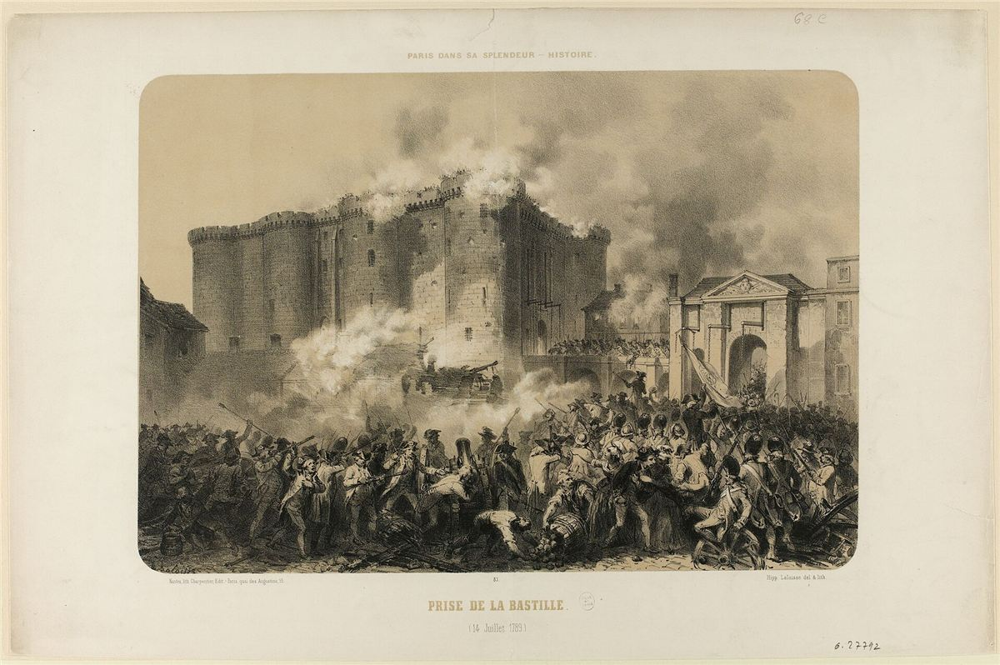

Contexte
Kropotkine travaille sur la Révolution française pendant vingt ans, depuis des articles parus en 1889 pour le centenaire. Il passe des mois au British Museum à lire les archives et les travaux des historiens. Le livre paraît en 1909, en français et en anglais. À l'époque, l'histoire de la Révolution est surtout celle des assemblées, des grands discours et des grands hommes. Kropotkine veut écrire son histoire populaire et économique.

La thèse
La Révolution est la rencontre de deux courants : celui des idées, porté par la bourgeoisie instruite, et celui de l'action, porté par les paysannes et paysans et par les pauvres des villes. Sans les soulèvements populaires, rien n'aurait basculé. Et la bourgeoisie a passé la Révolution à freiner le peuple qui l'avait portée au pouvoir.
Les grandes étapes
- Avant 1789 : émeutes de la faim dès 1775 (la « guerre des farines »), révoltes de plus en plus nombreuses jusqu'à 1788.
- Deux projets : la bourgeoisie veut un État centralisé, représentatif et protecteur de la propriété ; le peuple veut surtout en finir avec les seigneurs, la dîme et les droits féodaux, et avoir du pain.
- Les campagnes en 1789 : refus de payer, terriers (les registres des droits seigneuriaux) brûlés, châteaux attaqués, convois de grains arrêtés. C'est ce mouvement qui force l'Assemblée à abolir les privilèges dans la nuit du 4 août.
- Des abolitions en trompe-l'œil : les droits féodaux sont déclarés rachetables. Il faudra attendre 1793 et de nouvelles révoltes pour qu'ils soient abolis sans indemnité.
- Les sections et les communes : à Paris, les 48 sections tiennent des assemblées permanentes ; dans les villages, les communes s'administrent. Kropotkine y voit l'esprit communaliste, l'ébauche d'une organisation sans État.
- La Terreur et la centralisation jacobine finissent par étouffer ces assemblées populaires, préparant le terrain à Thermidor puis à Bonaparte.
Débats et limites
- Un livre militant : Kropotkine cherche dans la Révolution des leçons pour la révolution future, et idéalise parfois les sections parisiennes.
- Un livre reconnu pourtant par les historiens. Après lui, Georges Lefebvre sur les paysans, Albert Soboul sur les sans-culottes ou Daniel Guérin ont approfondi l'histoire « par en bas » qu'il avait ouverte.
Et aujourd'hui ?
L'histoire « vue d'en bas » est devenue un champ majeur de la recherche : histoire des gens ordinaires, des femmes, des révoltes oubliées. Le livre rappelle aussi une leçon pour tous les mouvements : la crainte des classes dirigeantes face au peuple qui s'organise lui-même, et leur habileté à récupérer les révolutions.
À retenir
- Le moteur de la Révolution, ce sont les soulèvements paysans.
- Les sections et communes populaires préfigurent une organisation sans État.
- Un grand livre d'histoire, toujours cité.
Le texte complet est sur Mamie Commune. Lire en ligne ou ouvrir le PDF.
Sources et pour aller plus loin
Le texte original
- Le texte complet sur Mamie Commune, à lire en ligne ou en PDF.
- « La Grande Révolution » sur la Bibliothèque anarchiste : le texte intégral, aussi en PDF et en livre numérique (EPUB).
Lire
- La Grande Peur de 1789, Georges Lefebvre, 1932.La révolte des campagnes au cœur de l'été 1789.
- Les Sans-culottes parisiens en l'an II, Albert Soboul, 1958.La grande étude sur les sections parisiennes.
- La Lutte de classes sous la Première République, Daniel Guérin, 1946.Une lecture libertaire de la Révolution, dans la lignée de Kropotkine.
Sur le web
- GallicaLa bibliothèque numérique de la BnF : journaux et pamphlets révolutionnaires d'époque, en accès libre.
Fiche de lecture rédigée par la bande à Mamie d'après les textes de la Bibliothèque anarchiste francophone. Cette fiche est libre de reproduction.
À lire aussi · Révolution & stratégie
- TAZ, Zone autonome temporairePlutôt qu'attendre une révolution qui recrée un pouvoir, ouvrir des espaces de liberté qui surgissent, vivent intensément et se dissolvent avant d'être écrasés.
- L'Action anarchiste dans la révolutionUne révolution doit créer en même temps qu'elle détruit, sinon de nouveaux chefs reprendront les rênes.
- Évolution et révolutionLa première version du texte qui deviendra « L'Évolution, la révolution et l'idéal anarchique ».